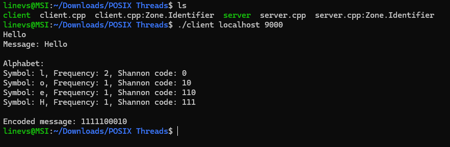

TCP Shannon-Fano Encoder (C++)

Technologies: C++, POSIX Threads, TCP Sockets
Description: This full-stack low-level project features a multi-threaded TCP client that sends messages to a forking server. The server encodes input using a custom Shannon-Fano algorithm and responds with the compressed message and symbol mapping.
Challenges: Designing thread-safe socket logic on the client side and implementing recursive frequency-based encoding on the server side. Ensuring reliable communication and process handling were key components.
View on GitHub